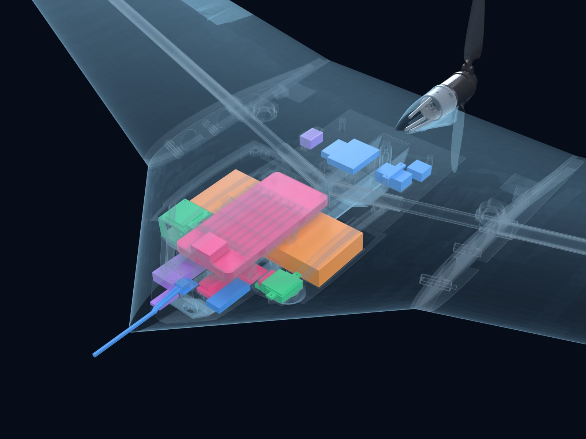
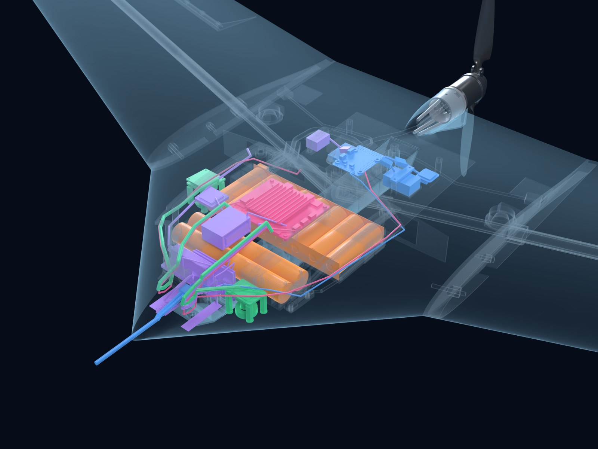

BLUEBIRD NEXT
- Span
- 1.8 m
- Range at 14 m/s
- 88.8 km (analysis)
- Take-off mass
- 2.70 kg
Explore the aircraft. Open the airbrake. See the full system.
Reworked from the inside out: a deeper centre body, a new onboard computer, half again as many cells and new radio bays, in a shell planned for molds. Both renders use the same camera and scale, with the shell drawn as glass.


Both renders use one camera, so parts that move sit at the same place in both frames.
BLUEBIRD flies a Pixel phone as its mission computer, with a holder, USB hub and cooling blower. NEXT carries a low-profile companion board on the underside of the hatch, where the phone rode, so it swings away with the hatch and leaves both packs free to lift out. The flight controller still flies the aircraft.
One 4S2P pack becomes 12 higher-capacity 21700 cells in two removable packs, 8 in the main bay and 4 in a new nose bay, each on one plug. Charge both in place through a port under the hatch, or swap in a charged pair; ideal diodes keep a mismatched pair from cross-charging. The nose cells replace the phone's forward mass, so NEXT trims with no ballast.
Centre-body thickness goes from 1.15 to 1.35 of the base section to fit the nose cells: a new body shape with its own molds. The planform, outer wing, fins and motor carry over from BLUEBIRD.
The thermal camera moves forward to the left of the nose cells, and the mapping camera moves outboard beside the main pack. Both sit on molded trays.
Bays for LTE and an Iridium satellite modem, plus the telemetry radio, all in the nose. Every component sits on a tray screwed to inserts, so changing a supplier means a new tray, not a new shell.
NEXT's centre body is planned as a glass-skinned foam sandwich instead of printed panels. The frames and bulkhead in the renders are a concept placed to carry the trays, not a finished structure.
| Quantity | BLUEBIRD | NEXT | Change |
|---|
BLUEBIRD figures come from its analysis of the as-designed aircraft. NEXT figures are the same analysis run on the NEXT geometry and layout. Both are analysis results, not flight-test results.
BLUEBIRD is a testbed: its centre body is printed piece by piece and bonded by hand, which suits research and slows production. NEXT is designed from the start to be built in quantity.
The centre body is a glass-skinned foam sandwich vacuum-bagged in female molds. Glass keeps the shell transparent to radio, so the antennas stay inside, and the layup is planned at about 80 g lighter than the printed skins.
We print the molds ourselves, so a new set is quick to make in-house. Output grows by printing another mold set rather than printing more aircraft; a glass layup line suits a few hundred aircraft a year, and molded foam is the step beyond about 1,000 a year.
Every component sits on a molded tray screwed into inserts in frames bonded at layup, with plug-in connectors, and each bay is sized for the larger of two candidate parts. A new supplier, or a US-made part, needs only a new tray mold, printed in-house; the shell molds stay.
The same airframe flies line-of-sight surveys or carries the long-range kit (LTE, Iridium satellite and ADS-B In) in bays that are already there. The motor firewall is drilled for a second motor, so the propulsion can change without new tooling.
Build times and mold output are team estimates for a design that has not been built. BLUEBIRD's 86 h comes from its design-for-manufacture review.
Thermal and RGB wildlife surveys over large, remote areas, with detection on the companion board. The LTE and satellite bays are for reporting from beyond line of sight, which needs an FAA waiver that is not held.
Mapping of fields and pasture with the downward mapping camera. Processing and video recording run on the companion board in flight.
Concept. The layout and performance are analysed; nothing is built or flown.